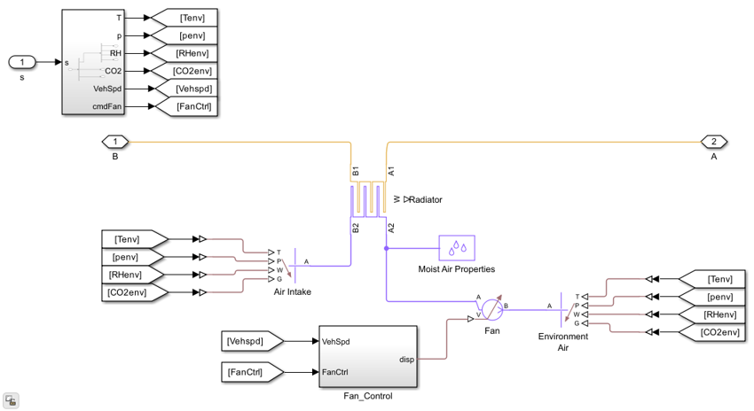

Radiator
Cross-flow heat exchanger for the BEV thermal management system.
Contents
Overview
The Radiator dissipates heat from the coolant loop to the ambient environment. It is modeled as a cross-flow heat exchanger with multiple coolant tubes, air fins, and fan-driven airflow. Heat transfer is computed from the primary surface area (tube walls) and the fin surface area. Two fans provide forced-air convection. The radiator connects to the coolant loop downstream of the thermal components (battery, motor, charger) and upstream of the coolant tank and pump.
Model: Radiator.slx
Parameters: RadiatorParams.m
Thermal Coupling: Yes
Open Model
open_system('Radiator')

Ports
Inputs
- Coolant inlet - Hot coolant from the thermal management loop.
- Ambient temperature - External air temperature.
- Fan airflow - Forced-air flow driven by radiator fans.
- Vehicle speed - Ram-air contribution to airflow at higher speeds.
Outputs
- Coolant outlet - Cooled coolant returned to the loop.
- Heat dissipation rate - Thermal power rejected to ambient.
Workflows
The Radiator is a critical part of the VehicleElectroThermal template coolant loop, balancing heat input from the battery, motor, and charger against ambient dissipation. Fan power consumption contributes to auxiliary energy draw in range estimation runs.
Parameters
| Name | Default | Description |
|---|---|---|
| Radiator length | 0.6 m | Overall radiator length |
| Radiator width | 0.015 m | Overall radiator width |
| Radiator height | 0.2 m | Overall radiator height |
| Number of coolant tubes | 25 | Number of coolant tubes in the core |
| Coolant tube height | 0.0015 m | Height of each coolant tube |
| Fin spacing | 0.002 m | Spacing between air-side fins |
| Wall thickness | 1e-4 m | Material thickness of tube walls |
| Wall thermal conductivity | 240 W/m/K | Thermal conductivity of wall material |
| Fan flow area | 0.5 m^2 | Total fan flow area (2 fans) |
See RadiatorParams.m for a complete list.